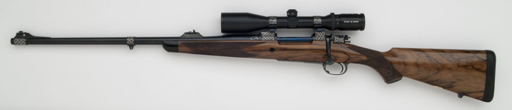

Todd is a Master
Gunsmith with a thorough knowledge of the finest American and European
rifles, shotguns, double rifles . Over 30 years experience he
specializes in restoration, stock making and rifle building. For
all of your gunsmithing needs, stock bending and specialty items such
as leather wrap pads. Todd is one of
the best in the country.

Todd Ramirez (left) Craig Boddington (right)
"My Todd Ramirez 7 x 57 is by far the nicest rifle I've ever owned... and to my thinking it's designed and built the way a fine bolt action rifle should be. In the field it's a joy to carry, and it handles like a dream. It has not yet failed me, and I'm sure it never will." Craig Boddington
Updated 02-08-11
Check Out the New Rifles on Custom Rifle Page
Home todd ramirez custom rifles Custom Rifles Signature Rifle Show Schedule